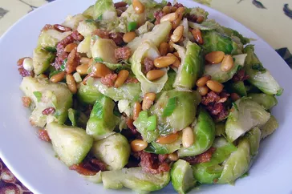

Shredded Brussels Sprouts

These shredded Brussels sprouts with bacon and pine nuts taste fantastic!
When I mentioned bringing Brussels sprouts to a holiday get-together, my
mom told me not to bother. After eating this dish, my family now requests
I bring this dish to every get-together!
Ingredients
- ½ pound sliced bacon
- ¼ cup butter
- ⅔ cup pine nuts
- 2 pounds Brussels sprouts, cored and shredded
- 3 green onions, minced
- ½ teaspoon seasoning salt
- pepper to taste
Steps
-
Place bacon in a large, deep skillet. Cook over medium-high heat until
crisp. Drain, reserving 2 tablespoons of grease in the skillet, crumble
and set aside.
-
Melt butter with reserved bacon grease in the same skillet over medium
heat. Add pine nuts; cook and stir until browned. Add Brussels sprouts
and green onions; season with seasoning salt and pepper. Cook over
medium heat until sprouts are wilted and tender, 10 to 15 minutes. Stir
in crumbled bacon just before serving.